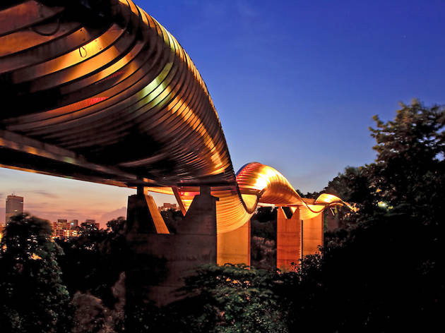
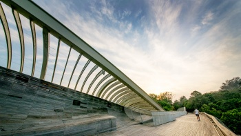

|

|
Undulating wave
At 36 metres above ground, the Henderson Waves bridge is the highest pedestrian bridge in Singapore. Unveiled in 2008, its fantastical shape has lent an unexpected jolt of design savvy to the lush green belt in the south of Singapore. |
|
|
True to its name, the bridge mimics the undulating shape of a wave, curving and twisting along its entire 274-metre length. Its form is anchored by steel arches and filled in with curved ‘ribs’—slats of Balau wood, a dense hardwood used in heavy construction and which is found only in Southeast Asia. |
||
| LET'S FIND OUT MORE HERE |  | |